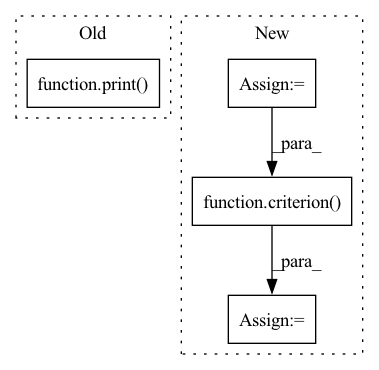

Pattern ID :18885

Before Change
print(input.size(), output.size())
loss = criterion(output, target)
print(loss.item())
def _test_chimeranet():
pass
After Change
output = model(input)
print(input.size(), output.size(), target.size())
output = output.view(batch_size, -1, embed_dim)
target = target.view(batch_size, n_sources, -1).permute(0, 2, 1)
loss = criterion(output, target, batch_mean=False)
print(loss)
def _test_chimeranet():
pass
In pattern: SUPERPATTERN
Frequency: 3
Non-data size: 4
Instances
Fragment ID: 61389784
Project Name: tky823/dnn-based_source_separation
Commit Name: 8860d8d92de4ba4390fa89247619810b0c821fe6
Time: 2021-11-22
Author: delta9guitar97@gmail.com
File Name: src/models/deep_clustering.py
M Class Name: AnonimousClass
N Class Name: AnonimousClass
M Method Name: _test_deep_embedding(0)
N Method Name: _test_deep_embedding(0)
M Parent Class:
N Parent Class:
M File Name: src/models/deep_clustering.py
N File Name: src/models/deep_clustering.py
M Start Line: 202
M End Line: 219
N Start Line: 202
N End Line: 232
'>
Before Change
else:
loss=criterion(out, j[-1].cuda())
totalloss += loss*len(j[-1])
print(totalloss)
if task == "classification":
pred.append(torch.argmax(out, 1))
elif task == "multilabel":
pred.append(torch.sigmoid(out).round())
After Change
loss=criterion(out, j[-1].float().cuda())
else:
if len(j[-1].size())>1:
j[-1] = j[-1].squeeze()
loss=criterion(out, j[-1].long().cuda())
totalloss += loss*len(j[-1])
//print(totalloss)
if task == "classification":
pred.append(torch.argmax(out, 1))
'>
Fragment ID: 61389785
Project Name: pliang279/multibench
Commit Name: 1c128af16e3b49797aee4b1097382015f746c920
Time: 2021-05-23
Author: blairc@andrew.cmu.edu
File Name: training_structures/Simple_Late_Fusion.py
M Class Name: AnonimousClass
N Class Name: AnonimousClass
M Method Name: train(16)
N Method Name: train(16)
M Parent Class:
N Parent Class:
M File Name: training_structures/Simple_Late_Fusion.py
N File Name: training_structures/Simple_Late_Fusion.py
M Start Line: 67
M End Line: 105
N Start Line: 55
N End Line: 107
'>
Before Change
else:
loss=criterion(out, j[-1].cuda())
totalloss += loss*len(j[-1])
print(totalloss)
if task == "classification":
pred.append(torch.argmax(out, 1))
elif task == "multilabel":
pred.append(torch.sigmoid(out).round())
After Change
loss=criterion(out, j[-1].float().cuda())
else:
if len(j[-1].size())>1:
j[-1] = j[-1].squeeze()
loss=criterion(out, j[-1].long().cuda())
totalloss += loss*len(j[-1])
//print(totalloss)
if task == "classification":
pred.append(torch.argmax(out, 1))
'>
Fragment ID: 61389786
Project Name: pliang279/multibench
Commit Name: e854effb566a45ddcf8788685b859e545feb70c0
Time: 2021-05-23
Author: blairc@andrew.cmu.edu
File Name: training_structures/Simple_Late_Fusion.py
M Class Name: AnonimousClass
N Class Name: AnonimousClass
M Method Name: train(16)
N Method Name: train(16)
M Parent Class:
N Parent Class:
M File Name: training_structures/Simple_Late_Fusion.py
N File Name: training_structures/Simple_Late_Fusion.py
M Start Line: 67
M End Line: 105
N Start Line: 55
N End Line: 107